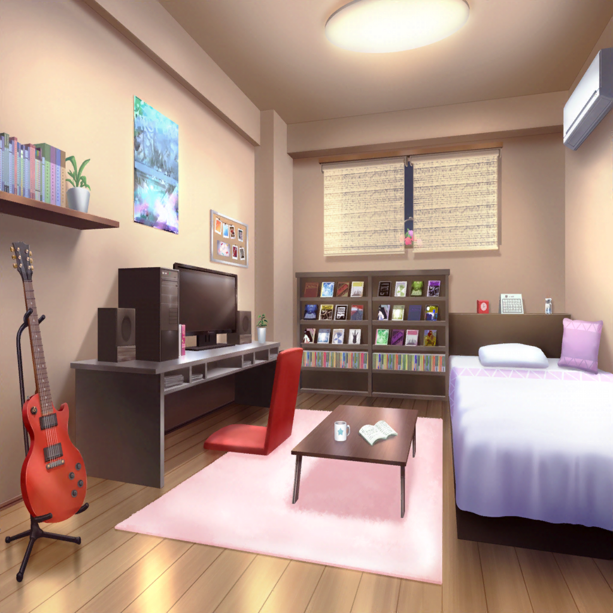

羽丘女子学園 屋上
モカ
それで〜？
歌詞、どんな風に直す？
どういう感じにしていったらいーんだろ
蘭
『いつも通り』……かな？
ひまり
なるほど〜！ ……つまり？
巴
今のアタシ達にとってのいつも通り……
それがどういうものなのかもう一度考えてみるか
ひまり
巴、なーいす！
そうすれば私達のことも、歌詞のことも一緒に考えられるね
巴
へへー、だろ？ アタシ、天才だろ？
モカ
ほら〜、ひーちゃんが言うから
トモちん調子に乗っちゃったよ
巴
たまにはいいだろー？
蘭・モカ・ひまり・つぐみ
あははっ
ひまり
じゃ、まずは私達の『いつも通り』……について考えてみよー！

羽丘女子学園 屋上
つぐみ
えっと……じゃあ、整理すると……
巴
『いつも通り』っていうのは変わること……？
でも、変わっちゃダメなものもあって……
あー！ だめだ、全然まとまらない
ひまり
むずかしい……
つぐみ
そろそろ、今日は終わりにする？
暗くなってきたし……
モカ
タイムアップか〜。
なんか、もーちょっとでわかる気がするんだけどな〜……
蘭
あのさ、明日休みだし……
みんな、このあと家に泊まっていかない？
ひまり
えっ、いいの！？
蘭
あたしも今日、このまま終わらせたくないし。
みんながよかったらだけど……
モカ・ひまり・巴・つぐみ
行く！
モカ
蘭の家にお泊りなんて、いつぶりだろ〜。
えへへー。さっそくママに連絡しとこーっと
ひまり
私も、お父さんにメッセージしとくっ。
楽しみだな〜♪

美竹家
蘭の父
みなさん、よく来てくれましたね。
ゆっくりしていってください
モカ
は〜い。おじゃましまーす
蘭の父
少しですが食べ物を用意しておいたから、蘭、
みなさんとわけなさい
蘭
も、もうひっこんどいてよ！ そういうのあたし達でやるから！
……みんな、あたしの部屋行こ！
巴
あははっ。そうしよっか。お邪魔します

美竹家 蘭の部屋
モカ
んで〜？ 『いつも通り』って、何〜？
ひまり
ん〜……なんだろう
蘭
こうなるってちょっと予想ついてたけど……
つぐみ
リラックスしちゃって、
全然、話し合える感じじゃなくなっちゃったね……
巴
ま、いいんじゃないか？
たまにはこういうのもさ
蘭
……はあ、まあ、いっか
モカ
ん〜、蘭パパが買ってきてくれたサンドイッチ、
ちょーおいひ〜……感謝〜
ひまり
差し入れにサンドイッチっていう新しいパターンが
追加されちゃったね
モカ
これが新・いつも通りになるといいな〜
巴
新・いつも通りも気づけばけっこう増えたんじゃないか？
蘭
それって、巴の『アレ』も含まれてる？
モカ
え〜……
巴
いや、あれは新・いつも通りだろ！
ひまり
蘭のお父さんが毎回ライブに来てくれることも
新・いつも通りっ！ だね
蘭
それも増えなくていいやつだってば！
モカ
モカちゃんが本番前にやまぶきベーカリーの方向に
向かっておじぎするのも、新・いつも通りかな〜
つぐみ
モカちゃん、そんなことしてたの！？
蘭
つぐみ、モカの発言を真に受けないほうがいいよ
モカ
へへ〜。これから新・いつも通りにしてこっかな〜
ひまり
他にもあるかな？ 新・いつも通り！
いっぱいあげていったらなにかわかるかもっ！
巴
賛成っ！ やってみよう。
……とりあえず、アタシのやつも入れといてくれよ
モカ
しょうがないな〜
巴
ははっ、ありがとな。
他にはなにかあるかな？
ひまり
ふふーん、こんな時に、ぴったりないいものがあるんだなー♪
蘭
何？
ひまり
じゃーん！ グループチャットのアルバム！
ここに、みんながいーっぱい写真あげてくれてるでしょ？
これを見ていけばなにかに気づけるかも
モカ
おお〜
つぐみ
ひまりちゃん、すごいよっ！
これ、すっごく役に立ちそうっ！
ひまり
でしょでしょ？ さかのぼるとー……あ！
私達がはじめて出た文化祭の写真から残ってるよ！
蘭
……ホントだ。懐かしいね
巴
うわ、なんかみんな若いな！
そうそう、このときのひまりさあ――